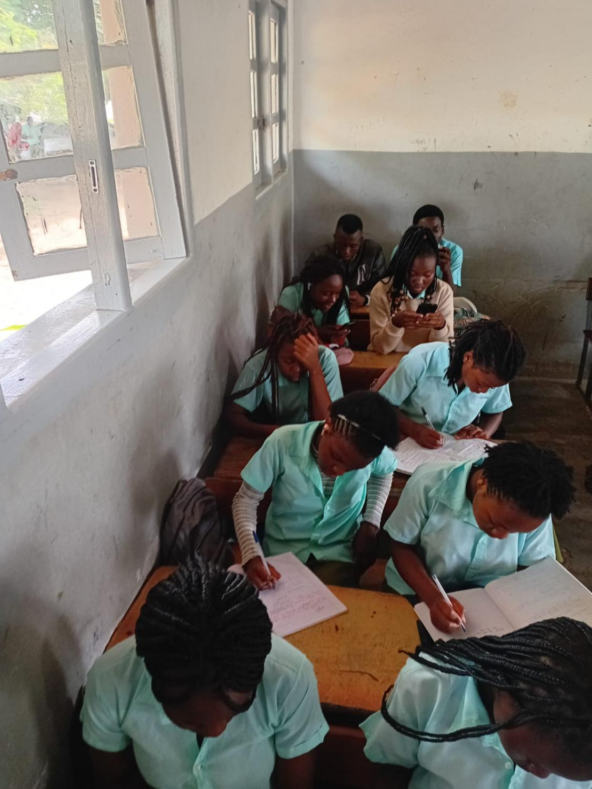
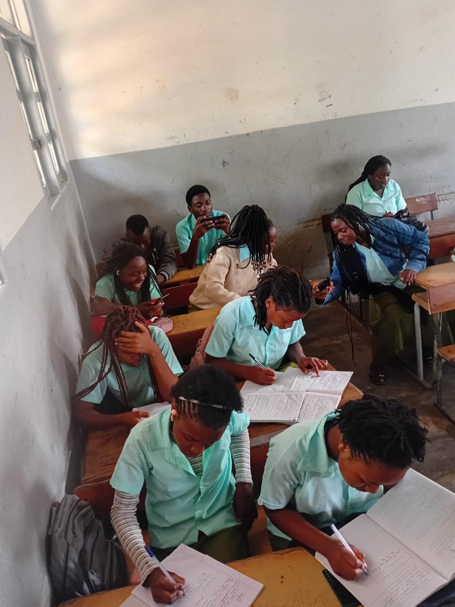
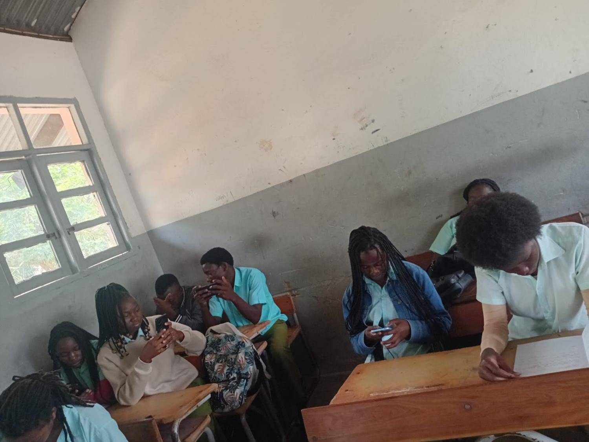
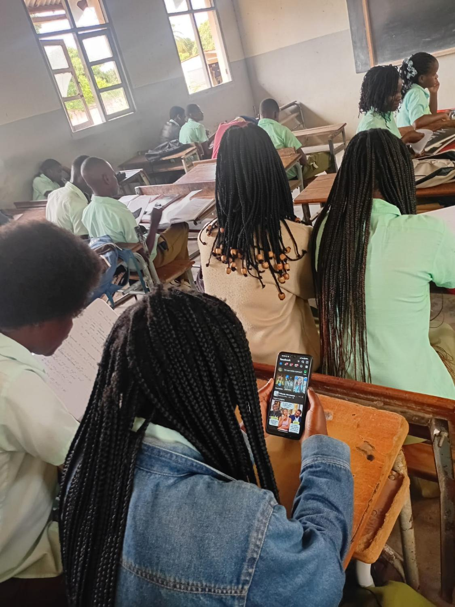
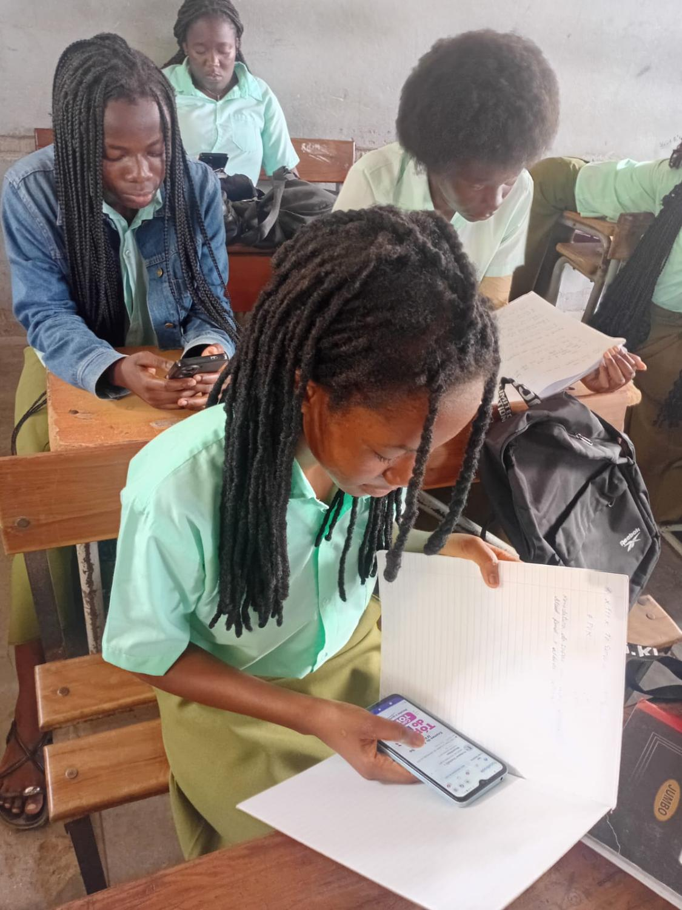
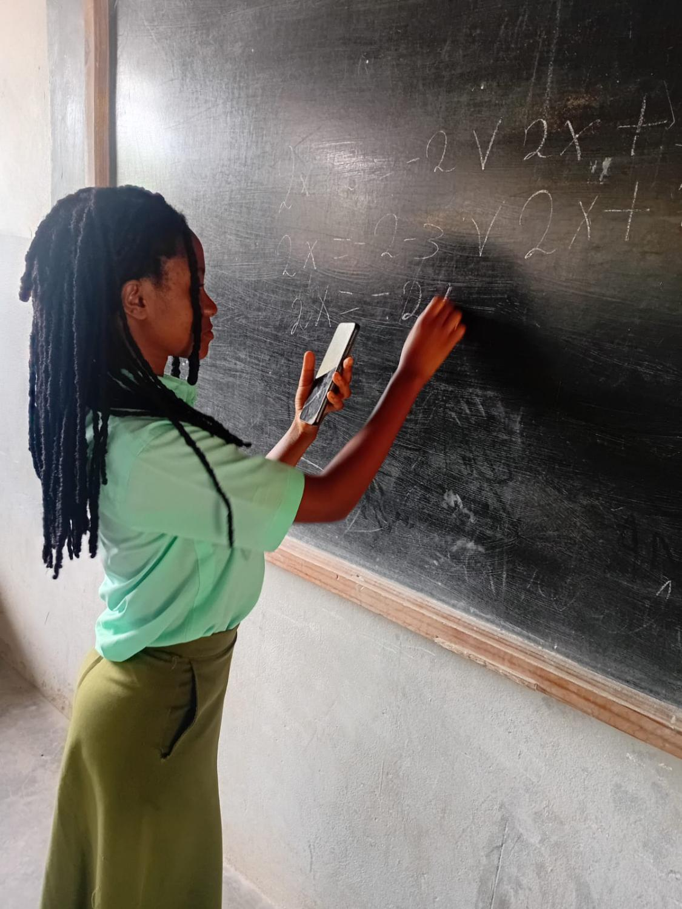
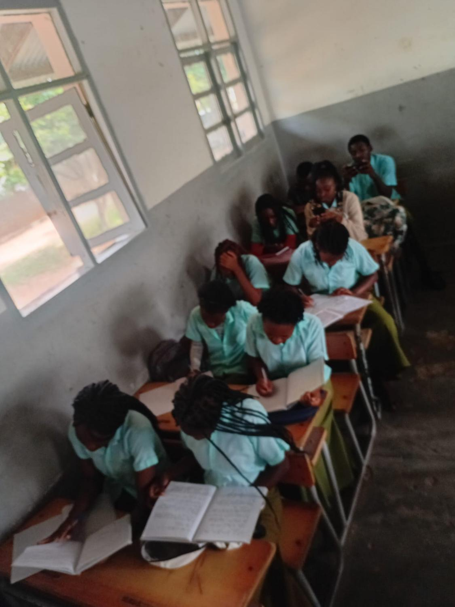

As fotografias abaixo mostram o uso de telemóveis na escola – tanto em momentos de estudo como de distracção.
Servem para ilustrar a realidade do tema.

Uso partilhado do telemóvel
Dois alunos concentrados no ecrã durante o tempo escolar.

Sala de aula
Alunos a escrever e outros a usar o telemóvel ao mesmo tempo.

Estudo e distracção
Parte da turma escreve enquanto outros consultam o telemóvel.

Atenção dividida
Vários alunos a interagir com o telemóvel durante a aula.

Redes sociais na aula
Aluna a navegar no Facebook enquanto outros estudam.

TikTok e estudo
Aluna a ver conteúdos do TikTok em cima do caderno.

Telemóvel e quadro
Aluna a resolver exercício no quadro enquanto segura o telemóvel.

Ambiente de sala de aula
Vista geral com alunos a estudar e a usar dispositivos.